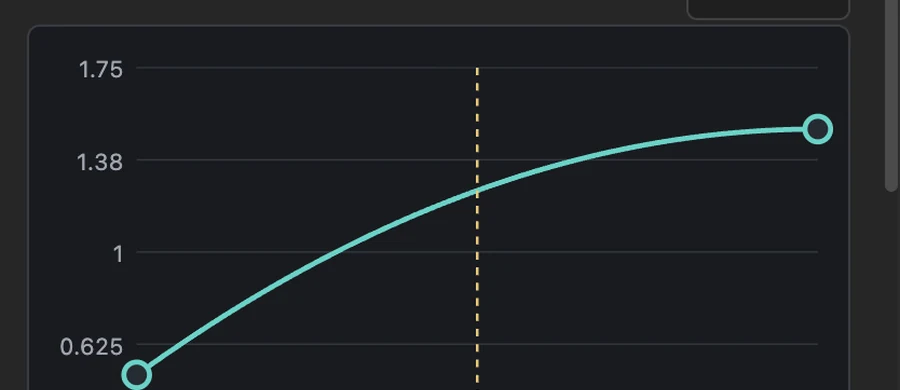
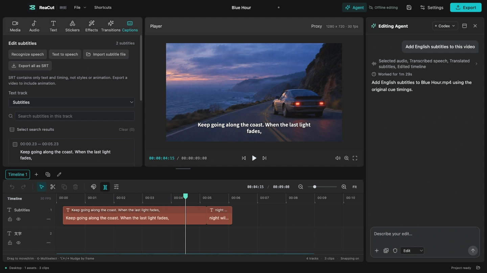
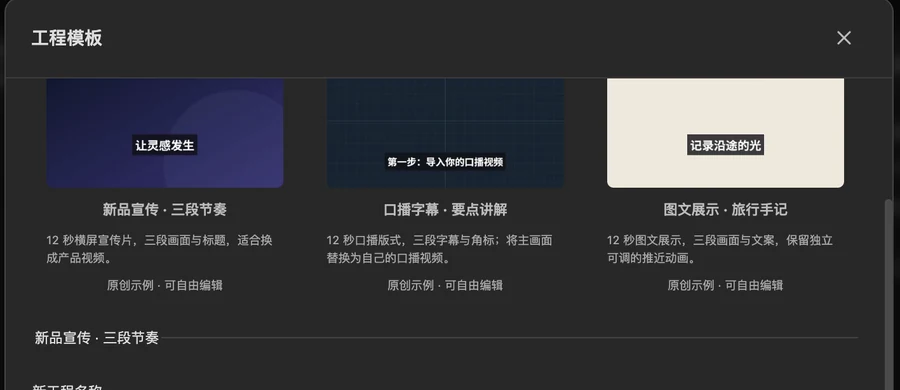

Keyframes and speed
Animate position, scale, and opacity. Shape a speed ramp, reverse a clip, or hold a frame.

Free and open source
Cut footage, style captions, and mix sound. From import to export, the core editing tools run on your Mac.
Download for macOSApple Silicon v0.9.0 Preview See the Agent
ReaCut recognizes speech on your Mac. Codex translates the text into editable subtitles with the original timing.

Add English subtitles to this video
Explore three parts of the editor with the Blue Hour project open.

Mark source ranges, trim and split clips, and keep several timelines in the same project.

Import SRT, batch-edit captions, or set up local transcription with MLX Whisper.

Normalize clip loudness, duck music under speech, and use detected beats as edit points.
Animate position, scale, and opacity. Shape a speed ramp, reverse a clip, or hold a frame.

Save an edit with named places for media and text. Swap in new material and save each cut as its own project.

Use lightweight proxies for high-resolution footage. Export a timeline or a selected range to MP4 or MOV.
Optional Codex plugin
Open ReaCut inside Codex and work directly on the timeline. Ask Codex to fill a template and export a batch of videos.


Open the DMG and drag ReaCut into Applications. This preview is ad-hoc signed and lacks Apple notarization. If macOS asks you to verify the developer, check the download’s SHA-256 before following Apple’s instructions. Installation guide
Yes. Import, editing, project storage, and export run locally without an account. Automatic transcription needs an initial setup with MLX Whisper and a local model. Local speech setup
ReaCut can import basic edits from supported local Jianying drafts. Import coverage is experimental, and some text styles, effects, and keyframes may be lost. Supported formats